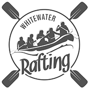

Overview
Purpose
The website will show the thrill of adventure on the water, permit the planning an purchase of supplied required to remain enjoyable and safe. The adversitment will show that anyone can enjoy and plan for trips specific to thier needs. Short trips for the tight schedules for the modern professional and longer trips for the seasoned adventurer. The keynote is that we are the one-stop shop for your white water rafting needs.
Audience
Adventure seeking mature adults needing to break away from the daily grind of thier professional lives with an interest to experience the addrenalin of adventure on the river. This site will be available to anyone with access to a desktop, laptop or mobile device.
Branding
Website Logo
Style Guide
Color Palette
Palette URL:
https://coolors.co/181818-aaaaaa-e9e9e9-12664f-99621e| Primary | Secondary | Accent 1 | Accent 2 | Accent 3 |
|---|---|---|---|---|
| #181818 #181818 |
#aaaaaa #aaaaaa |
#e9e9e9 #e9e9e9 |
#12664f #12664f |
#99621e #99621e |
Typography
Heading Font: Noto Serif
Paragraph Font: Noto Sans
Normal paragraph example
The best Whitewater Rafting in Colorado, White Water Rafting Company offers rafting on the Colorado and Roaring Fork Rivers in Glenwood Springs. Since 1974, we have been family owned and operated, rafting the Shoshone section of Glenwood Canyon and beyond.
Colored paragraph example
Trips vary from mild and great for families, to trips exclusively for physically fit and experienced rafters. No matter what type of river adventures you are seeking, White Water Rafting Company can make it happen for you.